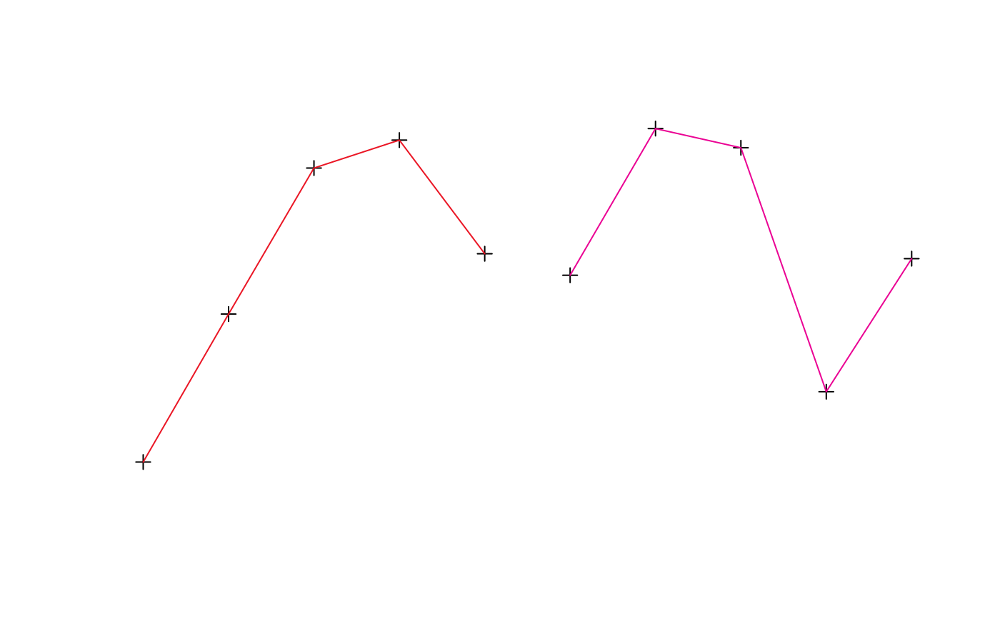

An extension of SpatialPointsDataFrame-class by including
"TimeOrderedRecords". The records within the data frame are
explicitly ordered by DateTime data within IDs.
Objects can be created by calls of the form
trip(obj="SpatialPointsDataFrame", TORnames="TimeOrderedRecords").
The object contains all the slots present within a
SpatialPointsDataFrame-class, particularly data which
contains columns of at least those specified by TOR.columns.
trip for examples of directly using the class.
trip-accessors describes methods for accessing information on
trip objects.
showClass("trip")#> Class "trip" [package "trip"] #> #> Slots: #> #> Name: TOR.columns data coords.nrs coords bbox proj4string #> Class: character data.frame numeric matrix matrix CRS #> #> Extends: #> Class "TimeOrderedRecords", directly #> Class "SpatialPointsDataFrame", directly #> Class "SpatialPoints", by class "SpatialPointsDataFrame", distance 2 #> Class "Spatial", by class "SpatialPointsDataFrame", distance 3 #> Class "SpatialVector", by class "SpatialPointsDataFrame", distance 3d <- data.frame(x=1:10, y=rnorm(10), tms=Sys.time() + 1:10, id=gl(2, 5)) sp::coordinates(d) <- ~x+y ## this avoids complaints later, but these are not real track data (!) sp::proj4string(d) <- sp::CRS("+proj=laea +ellps=sphere", doCheckCRSArgs = FALSE) tr <- trip(d, c("tms", "id")) summary(tr)#> #> Object of class trip #> tripID ("id") No.Records startTime ("tms") endTime ("tms") tripDuration #> 1 1 5 2020-10-27 23:24:32 2020-10-27 23:24:36 4 secs #> 2 2 5 2020-10-27 23:24:37 2020-10-27 23:24:41 4 secs #> tripDistance meanSpeed maxSpeed #> 1 6.702647 6032.383 7207.50 #> 2 7.896238 7106.614 10906.68 #> #> Total trip duration: 8 seconds (0 hours, 8 seconds) #> #> Derived from Spatial data: #> #> Object of class SpatialPointsDataFrame #> Coordinates: #> min max #> x 1.000000 10.000000 #> y -2.258204 1.650735 #> Is projected: TRUE #> proj4string : [+proj=laea +ellps=sphere] #> Number of points: 10 #> Data attributes: #> tms id #> Min. :2020-10-27 23:24:32 1:5 #> 1st Qu.:2020-10-27 23:24:35 2:5 #> Median :2020-10-27 23:24:37 #> Mean :2020-10-27 23:24:37 #> 3rd Qu.:2020-10-27 23:24:39 #> Max. :2020-10-27 23:24:41 #>#> [1] 10 2#> [1] "tms" "id"#> #> Object of class trip #> tripID ("id") No.Records startTime ("tms") endTime ("tms") tripDuration #> 1 2 5 2020-10-27 23:24:37 2020-10-27 23:24:41 4 secs #> #> data.columns data.class #> 1 tms POSIXct **trip DateTime** #> 2 id factor **trip ID** #>#> x y tms id #> 1 1 -2.2582039 2020-10-27 23:24:32 1 #> 2 2 -0.5237479 2020-10-27 23:24:33 1 #> 3 3 1.1880281 2020-10-27 23:24:34 1 #> 4 4 1.5156202 2020-10-27 23:24:35 1 #> 5 5 0.1833636 2020-10-27 23:24:36 1 #> 6 6 -0.0685547 2020-10-27 23:24:37 2 #> 7 7 1.6507349 2020-10-27 23:24:38 2 #> 8 8 1.4259565 2020-10-27 23:24:39 2 #> 9 9 -1.4338830 2020-10-27 23:24:40 2 #> 10 10 0.1257564 2020-10-27 23:24:41 2tr[1:3, ]#> #> Object of class trip #> tripID ("id") No.Records startTime ("tms") endTime ("tms") tripDuration #> 1 1 3 2020-10-27 23:24:32 2020-10-27 23:24:34 2 secs #> #> data.columns data.class #> 1 tms POSIXct **trip DateTime** #> 2 id factor **trip ID** #>tr[, 1]#> trip-defining Date or ID columns dropped, reverting to SpatialPointsDataFrame #>#> class : SpatialPointsDataFrame #> features : 10 #> extent : 1, 10, -2.258204, 1.650735 (xmin, xmax, ymin, ymax) #> crs : +proj=laea +ellps=sphere #> variables : 1 #> names : tms #> min values : 1603841072.78883 #> max values : 1603841081.78883tr[[1]]#> [1] "2020-10-27 23:24:32 UTC" "2020-10-27 23:24:33 UTC" #> [3] "2020-10-27 23:24:34 UTC" "2020-10-27 23:24:35 UTC" #> [5] "2020-10-27 23:24:36 UTC" "2020-10-27 23:24:37 UTC" #> [7] "2020-10-27 23:24:38 UTC" "2020-10-27 23:24:39 UTC" #> [9] "2020-10-27 23:24:40 UTC" "2020-10-27 23:24:41 UTC"